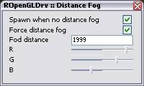

Raven/RRender
RRenders is pack of drivers with distance fog support:
- Direct3D (base: original UT d3d driver)
- Direct3D8 (base: d3d8 driver by Chris Dohnal)
- OpenGL (base: OpenGL driver by Chris Dohnal)
There are two ways of setting up a distance fog. You can define in LevelInfo→ZoneLight (default settings for entire level) or in ZoneInfo actor (settings for certain zone):
- FogColor - defines fog color
- FogDistance - defines fog distance
Warning
- Minimal fog distance value us 128!! Anything below means no distance fog.
You can also download RRenderMenu and from mod menu change distance fog color, fog distance in game:
- Spawn when no distance fog - distance fog will be spawned in those areas where fog distance is not applied by defaults
- Force distance fog - will always spawn distance fog with following options
- Fog distance - how far player can see (can not be smaller then 128)
- R - R in RGB color
- G - G in RGB color
- B - B in RGB color

distance fog menu ![[ropenglprev]](images/ropenglprev.jpeg) distance fog |